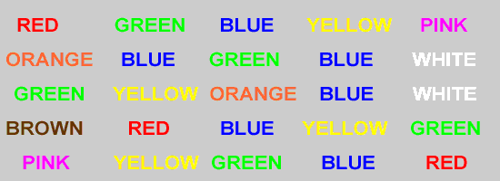
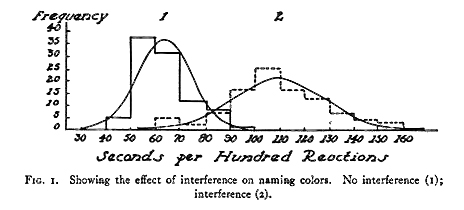

One of my hobbies is a little unusual. I'm a hypnotist. I've been hypnotizing people for about 10 years now. In the past, I ran an educational blog and had a store where you could buy recordings at www.ihypnou.com, but it's currently dead due to a broken wordpress install. :( I still have some videos on YouTube and at least one article on Instructables.
The Stroop Effect
Quite a few people are skeptical about hypnosis. When you see someone hypnotized in a video or at a live show, it's hard to tell whether they're really 'under' or just going along with it. Because there's no great definition of what hypnosis is, some people question whether or not it even exists. But there are some experiments that make it quite obvious that something is going on.
One of my favorite demonstrations with hypnosis has to do with something called the Stroop Effect. It's based on a chart like the one shown below:
You time how long it takes someone to list out the colors that the words are written in. Then you compare just how long it takes to do the same thing with the image below.

The second image, where the color names are written in completely different colors, takes people substantially longer to complete, due to the brain wanting to return the color word as the answer.
However, if you hypnotize someone and give them the suggestion that the words in the image are gibberish and unreadable, the difference in time disappears. This doesn't happen when you ask someone to pretend the words aren't real. The result is a clear indicator that the subject's visual processing is being altered in some way - they're no longer reading the words. Studies have even been performed using FMRI tests , and although the results aren't yet conclusive, they indicate reduced activity in the parts of the brain responsible for reading - something that isn't normally controllable.
This is a clear indication that hypnosis is not only 'real' but could be a useful tool in understanding how we percieve our world.